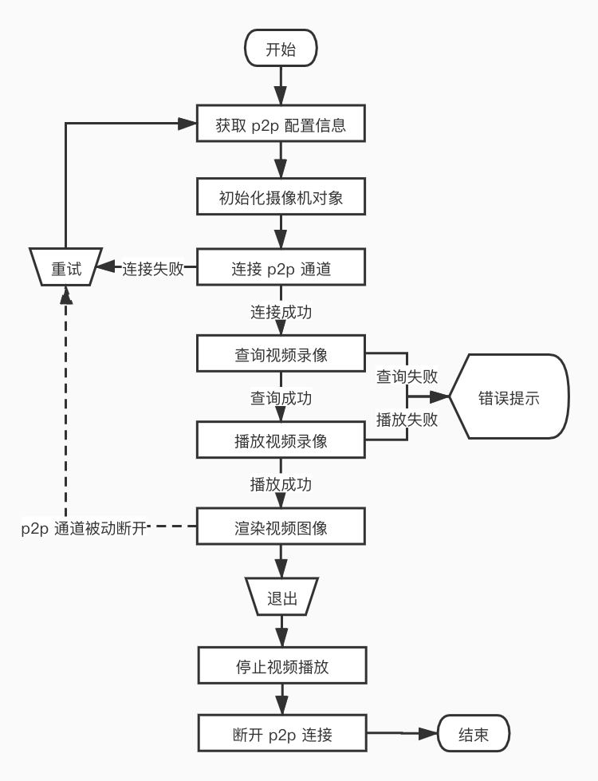

存储卡视频回放
涂鸦智能摄像机支持存储卡录制功能。智能摄像机插入存储卡后，可以查看存储卡的信息和状态，并设置录像开关和模式，详情可以参考存储卡管理章节。
设备在存储卡中保存视频录像后，可以通过 SDK 在 App 端播放视频录像，同实时视频直播一样，在开始回放前，需要先连接上 p2p 通道。p2p 通道连接成功后，可以获取到设备端存储卡中录制的视频片段时间信息，然后播放视频片段。
视频片段
设备端保存在存储卡中的视频片段，最长为 10 分钟一段，最短为 10 秒钟一段。SDK 支持以天为单位查看和播放视频录像，并且提供查询某年某月中，哪几天保存有视频录像，以便于用户查看，查询结果通过TuyaSmartCameraDelegate中的代理方法返回。
接口说明
查询某年某月中保存有视频录像的日子
- (void)queryRecordDaysWithYear:(NSUInteger)year month:(NSUInteger)month;
参数说明
| 参数 | 说明 |
|---|---|
| year | 年，如：2020 |
| month | 月，如：2 |
接口说明
查询某年某月某日的所有视频录像片段
- (void)queryRecordTimeSliceWithYear:(NSUInteger)year month:(NSUInteger)month day:(NSUInteger)day;
参数说明
| 参数 | 说明 |
|---|---|
| year | 年，如：2020 |
| month | 月，如：2 |
| day | 日，如：22 |
接口说明
代理回调
查询有视频录像的日期结果回调
- (void)camera:(id<TuyaSmartCameraType>)camera didReceiveRecordDayQueryData:(NSArray<NSNumber *> *)days;
参数说明
| 参数 | 说明 |
|---|---|
| camera | 执行查询操作的摄像机对象 |
| days | 有视频录像的日期数组，如@[@(1), @(2)]表示查询的当月，1、2 号有视频录像，失败返回空数组 |
接口说明
当查询某天中的所有视频录像片段结果回调
- (void)camera:(id<TuyaSmartCameraType>)camera didReceiveTimeSliceQueryData:(NSArray<NSDictionary *> *)timeSlices;
参数说明
| 参数 | 说明 |
|---|---|
| camera | 执行查询操作的摄像机对象 |
| timeSlices | 当天的视频片段时间信息数组，失败返回空数组 |
视频片段时间数据
timeSlices中的元素类型是NSDictionary
| 字段（定义在 SDK 中的常量名） | 类型 | 说明 |
|---|---|---|
| kTuyaSmartPlaybackPeriodStartDate | NSDate | 视频片段开始时间 |
| kTuyaSmartPlaybackPeriodStopDate | NSDate | 视频片段结束时间 |
| kTuyaSmartPlaybackPeriodStartTime | NSNumber | 视频片段开始时间的 Unix 时间戳 |
| kTuyaSmartPlaybackPeriodStopTime | NSNumber | 视频片段结束时间的 Unix 时间戳 |
视频播放
在成功获取到某天中的视频录像片段后，就可以开始播放录像视频了。值得注意的是，如果停止播放视频录像后，再进行实时视频播放，或者 p2p 连接断开，重新连接上 p2p 通道后，再次播放视频录像，需要重新获取一下当天的视频录像片段，否则可能会出现播放异常。
接口说明
开始播放某段视频录像，playTime的取值范围是：[startTime, stopTime)
- (void)startPlayback:(NSInteger)playTime startTime:(NSInteger)startTime stopTime:(NSInteger)stopTime;
参数说明
| 参数 | 说明 |
|---|---|
| playTime | 此段视频中，开始播放的时间点，使用 Unix 时间戳 |
| startTime | 此段视频的开始时间，使用 Unix 时间戳 |
| stopTime | 此段视频的结束时间，使用 Unix 时间戳 |
接口说明
暂停播放
- (void)pausePlayback;
接口说明
恢复播放
- (void)resumePlayback;
接口说明
停止播放
- (void)stopPlayback;
代理接口
视频录像成功开始播放
- (void)cameraDidBeginPlayback:(id<TuyaSmartCameraType>)camera;
代理接口
视频录像已暂停播放
- (void)cameraDidPausePlayback:(id<TuyaSmartCameraType>)camera;
代理接口
视频录像已恢复播放
- (void)cameraDidResumePlayback:(id<TuyaSmartCameraType>)camera;
代理接口
视频录像已停止播放
- (void)cameraDidStopPlayback:(id<TuyaSmartCameraType>)camera;
代理接口
视频录像播放结束
- (void)cameraPlaybackDidFinished:(id<TuyaSmartCameraType>)camera;
连续播放
涂鸦智能摄像机的视频录像分两种录像模式，连续录像和事件录像。连续录像时，视频录像会是 10 分钟一个片段，且所有视频片段是连续的，但是如果中间有停止过视频录像，那么连续录像模式下的视频片段间也可能会有间隔。事件录像时，每个录像片段长度不等，且片段间的间隔时间也长短不一。
如果某天的视频录像片段是连续的，那么播放录像时，会自动播放下一段。也就是说，即使调用开始播放接口，传入的是当天第一个视频片段的时间点，视频也会一直播放到当天最后一个视频片段的最后一帧视频，才会回调视频播放结束的代理方法。
如果某天的视频录像片段是不连续的（即视频录像片段 A 结束后，隔了一段时间才有视频录像片段 B），在播放到断开的地方（即播放到视频片段 A 的最后一帧），视频流会自动停止，SDK 也不会收到视频录像播放结束的回调。这在最新涂鸦智能摄像机嵌入式 SDK 中已经修改为，视频片段不连续时，每一个片段播放结束都会回调视频录像播放结束，故开发者可以在收到视频播放结束的代理方法后，播放下一段视频录像，以达到连续播放的目的。但如果设备的固件版本不是最新的，则需要开发者通过视频帧数据回调方法，帧信息中的时间戳来判断当前帧是否是当前视频录像片段的最后一帧，手动判断当前视频录像片段是否播放结束。
停止与暂停
pausePlayback和 stopPlayback都能达到停止播放视频的目的，它们之间的区别是，调用stopPlayback后，无法调用resumePlayback来恢复播放。停止播放后，如果想要继续之前的进度开始播放，那么必须保存停止播放时，最后一帧视频的时间戳，以及播放的视频录像的时间片段，以重新调用startPlayback方法来继续播放。
另外，在成功获取到视频录像片段时间数据后，无论是正在播放录像视频，还是暂停播放，都可以直接调用startPlayback重新播放另一个视频录像片段，而不必先调用stopPlayback停止播放。
流程图

示例代码
ObjC
#define kTuyaSmartIPCConfigAPI @"tuya.m.ipc.config.get"
#define kTuyaSmartIPCConfigAPIVersion @"2.0"
- (void)startPlayback {
if (self.connected) {
[self.camera queryRecordTimeSliceWithYear:2020 month:2 day:12];
return;
}
id p2pType = [self.deviceModel.skills objectForKey:@"p2pType"];
[[TuyaSmartRequest new] requestWithApiName:kTuyaSmartIPCConfigAPI postData:@{@"devId": self.devId} version:kTuyaSmartIPCConfigAPIVersion success:^(id result) {
dispatch_async(dispatch_get_global_queue(DISPATCH_QUEUE_PRIORITY_DEFAULT, 0), ^{
TuyaSmartCameraConfig *config = [TuyaSmartCameraFactory ipcConfigWithUid:[TuyaSmartUser sharedInstance].uid localKey:self.deviceModel.localKey configData:result];
self.camera = [TuyaSmartCameraFactory cameraWithP2PType:p2pType config:config delegate:self];
[self.camera connect];
});
} failure:^(NSError *error) {
// 获取配置信息失败
}];
}
- (void)pausePlayback {
[self.camera pausePlayback];
}
- (void)resumePlayback {
[self.camera resumePlayback];
}
- (void)stopPlayback {
[self.camera stopPlayback];
}
#pragma mark - TuyaSmartCameraDelegate
- (void)cameraDidConnected:(id<TuyaSmartCameraType>)camera {
self.connected = YES;
// 需要 p2p 连接成功后查询某天的视频录像片段
[camera queryRecordTimeSliceWithYear:2020 month:2 day:12];
}
- (void)cameraDisconnected:(id<TuyaSmartCameraType>)camera {
// p2p 连接被动断开，一般为网络波动导致
self.connected = NO;
self.playbacking = NO;
}
- (void)camera:(id<TuyaSmartCameraType>)camera didReceiveTimeSliceQueryData:(NSArray<NSDictionary *> *)timeSlices {
// 如果当天没有视频录像，则不播放
if (timeSlices.count == 0) {
return;
}
// 保存视频录像列表，从第一个开始播放
self.timeSlicesInCurrentDay = [timeSlices copy];
self.timeSlicesIndex = 0;
NSDictionary *timeSlice = timeSlices.firstObject;
NSInteger startTime = [timeSlice[kTuyaSmartTimeSliceStartTime] integerValue];
NSInteger stopTime = [timeSlice[kTuyaSmartTimeSliceStopTime] integerValue];
// 从第一个视频片段的第一秒开始播放
NSInteger playTime = startTime;
[camera startPlayback:playTime startTime:startTime stopTime:stopTime];
}
- (void)camera:(id<TuyaSmartCameraType>)camera ty_didReceiveVideoFrame:(CMSampleBufferRef)sampleBuffer frameInfo:(TuyaSmartVideoFrameInfo)frameInfo {
NSInteger index = self.timeSlicesIndex + 1;
// 如果没有下一个视频录像，则返回
if (index >= self.timeSlicesInCurrentDay.count) {
return;
}
NSDictionary *currentTimeSlice = [self.timeSlicesInCurrentDay objectAtIndex:self.timeSlicesIndex];
NSInteger stopTime = [currentTimeSlice[kTuyaSmartTimeSliceStopTime] integerValue];
// 如果当前视频帧的时间戳大于等于当前视频片段的结束时间，则播放下一个视频片段
if (frameInfo.nTimeStamp >= stopTime) {
NSDictionary *nextTimeSlice = [self.timeSlicesInCurrentDay objectAtIndex:index];
NSInteger startTime = [nextTimeSlice[kTuyaSmartTimeSliceStartTime] integerValue];
NSInteger stopTime = [nextTimeSlice[kTuyaSmartTimeSliceStopTime] integerValue];
NSInteger playTime = startTime;
[camera startPlayback:playTime startTime:startTime stopTime:stopTime];
}
}
- (void)cameraDidBeginPlayback:(id<TuyaSmartCameraType>)camera {
// 视频录像开始播放
self.playbacking = YES;
self.playbackPaused = NO;
// 将视频渲染视图添加到屏幕上
[self.view addSubview:camera.videoView];
}
- (void)cameraDidPausePlayback:(id<TuyaSmartCameraType>)camera {
// 视频录像播放已暂停
self.playbackPaused = YES;
}
- (void)cameraDidResumePlayback:(id<TuyaSmartCameraType>)camera {
// 视频录像已恢复播放
self.playbackPaused = NO;
}
- (void)cameraDidStopPlayback:(id<TuyaSmartCameraType>)camera {
// 视频录像已停止播放
self.playbacking = NO;
self.playbackPaused = NO;
}
- (void)cameraPlaybackDidFinished:(id<TuyaSmartCameraType>)camera {
// 视频录像已结束播放
self.playbacking = NO;
self.playbackPaused = NO;
}
// 错误回调
- (void)camera:(id<TuyaSmartCameraType>)camera didOccurredErrorAtStep:(TYCameraErrorCode)errStepCode specificErrorCode:(NSInteger)errorCode {
if (errStepCode == TY_ERROR_CONNECT_FAILED) {
// p2p 连接失败
self.connected = NO;
}
else if (errStepCode == TY_ERROR_START_PLAYBACK_FAILED) {
// 存储卡录像播放失败
self.playbacking = NO;
self.playbackPaused = NO;
}
else if (errStepCode == TY_ERROR_PAUSE_PLAYBACK_FAILED) {
// 暂停播放失败
}
else if (errStepCode == TY_ERROR_RESUME_PLAYBACK_FAILED) {
// 恢复播放失败
}
}
Swift
func startPlayback() {
if self.isConnected {
self.camera.queryRecordTimeSlice(withYear: 2020, month: 2, day: 12)
return
}
let p2pType = self.deviceModel.skills["p2pType"]!
TuyaSmartRequest().request(withApiName: kTuyaSmartIPCConfigAPI, postData: ["devId": self.devId], version: kTuyaSmartIPCConfigAPIVersion, success: { result in
guard let responder = result as? [AnyHashable:Any] else {
return;
}
DispatchQueue.global().async {
let config = TuyaSmartCameraFactory.ipcConfig(withUid: TuyaSmartUser.sharedInstance().uid, localKey: self.deviceModel.localKey, configData: responder)
self.camera = TuyaSmartCameraFactory.camera(withP2PType: p2pType, config: config, delegate: self)
self.camera.connect()
}
}) { _ in
// 获取配置信息失败
}
}
func pausePlayback() {
self.camera.pausePlayback()
}
func resumePlayback() {
self.camera.resumePlayback()
}
func stopPlayback() {
self.camera.stopPlayback()
}
func cameraDidConnected(_ camera: TuyaSmartCameraType!) {
self.isConnected = true
// 需要 p2p 连接成功后查询某天的视频录像片段
camera.queryRecordTimeSlice(withYear: 2020, month: 2, day: 12)
}
func cameraDisconnected(_ camera: TuyaSmartCameraType!) {
// p2p 连接被动断开，一般为网络波动导致
self.isConnected = false
self.isPlaybacking = false
}
func camera(_ camera: TuyaSmartCameraType!, didReceiveTimeSliceQueryData timeSlices: [[AnyHashable : Any]]!) {
// 如果当天没有视频录像，则不播放
guard timeSlices.count > 0 else {
return;
}
// 保存视频录像列表，从第一个开始播放
self.timeSlices = timeSlices
self.timesliceIndex = 0
let video = timeSlices.first!
let startTime = video[kTuyaSmartTimeSliceStartTime] as! Int
let stopTime = video[kTuyaSmartTimeSliceStopTime] as! Int
// 从第一个视频片段的第一秒开始播放
let playTime = startTime
camera.startPlayback(playTime, startTime: startTime, stopTime: stopTime)
}
func camera(_ camera: TuyaSmartCameraType!, ty_didReceiveVideoFrame sampleBuffer: CMSampleBuffer!, frameInfo: TuyaSmartVideoFrameInfo) {
let index = self.timesliceIndex + 1
// 如果没有下一个视频录像，则返回
guard index < self.timeSlices.count else {
return
}
let currentTimeSlice = timeSlices[self.timesliceIndex]
let endTime = currentTimeSlice[kTuyaSmartTimeSliceStopTime] as! Int
guard frameInfo.nTimeStamp >= endTime else {
return
}
// 如果当前视频帧的时间戳大于等于当前视频片段的结束时间，则播放下一个视频片段
let nextTimeSlice = timeSlices.first!
let startTime = nextTimeSlice[kTuyaSmartTimeSliceStartTime] as! Int
let stopTime = nextTimeSlice[kTuyaSmartTimeSliceStopTime] as! Int
let playTime = startTime
camera.startPlayback(playTime, startTime: startTime, stopTime: stopTime)
}
func cameraDidBeginPlayback(_ camera: TuyaSmartCameraType!) {
// 视频录像开始播放
self.isPlaybacking = true
self.isPlaybackPaused = false
// 将视频渲染视图添加到屏幕上
self.view.addSubview(camera.videoView())
}
func cameraDidPausePlayback(_ camera: TuyaSmartCameraType!) {
// 视频录像播放已暂停
self.isPlaybackPaused = true
}
func cameraDidResumePlayback(_ camera: TuyaSmartCameraType!) {
// 视频录像已恢复播放
self.isPlaybackPaused = false
}
func cameraDidStopPlayback(_ camera: TuyaSmartCameraType!) {
// 视频录像已停止播放
self.isPlaybacking = false
self.isPlaybackPaused = false
}
func cameraPlaybackDidFinished(_ camera: TuyaSmartCameraType!) {
// 视频录像已结束播放
self.isPlaybacking = false
self.isPlaybackPaused = false
}
func camera(_ camera: TuyaSmartCameraType!, didOccurredErrorAtStep errStepCode: TYCameraErrorCode, specificErrorCode errorCode: Int) {
if errStepCode == TY_ERROR_CONNECT_FAILED {
// p2p 连接失败
self.isConnected = false
}else if errStepCode == TY_ERROR_START_PLAYBACK_FAILED {
// 存储卡录像播放失败
self.isPlaybacking = false
self.isPlaybackPaused = false
}else if errStepCode == TY_ERROR_PAUSE_PLAYBACK_FAILED {
// 暂停播放失败
}else if errStepCode == TY_ERROR_RESUME_PLAYBACK_FAILED {
// 恢复播放失败
}
}
在实时视频播放时，如果想要切换到录像播放模式，不需要断开 p2p 连接再重新连接 p2p 通道，但是需要先停止实时视频播放，再去获取当天的视频录像开始播放，否则会出现实时视频画面和视频录像画面串流闪烁的情况。视频录像回放切换实时视频播放的时候同理。 另外，不要对同一个设备，同时创建两个
TuyaSmartCameraType对象，会导致资源错误释放出现异常情况。